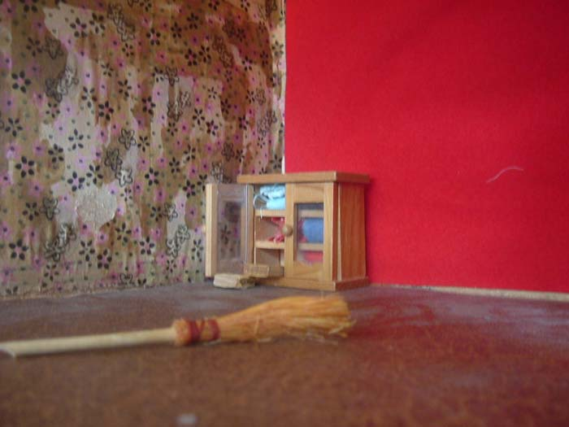

	<div id="oneCol" class="row">
    <div class="large-12 columns">
        <div class="center">
        <a href="mao002.html" title="Click for the next image in the Modern Art Oxford series of photographs"></a>
        </div>
        <div class="medium-10 medium-offset-1 end columns">
        <h3>Modern Art Oxford (2007)</h3>
        <p>commissioned me to work with Year 5 pupils at Rose Hill Primary School, Oxford. Inspiration came from the work of artist Moshekwa Lange who was exhibiting in their Encounters programme both at the Gallery and at the School. The project was part of a Creative Partnerships collaboration.<br />
<strong>Images shown are by Rose Hill pupils</strong> and were included in a display shown at the Gallery&#8217;s Cafe at the end of the project - Sept-Oct 07.</p>
<p>House <br />
    <span class="links"><a href="mao002.html">next</a></span></p>
        </div>
     </div>
</div>


